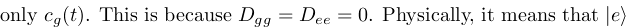
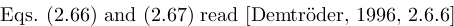
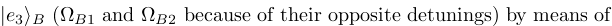
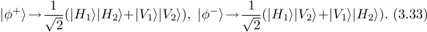

COPYRIGHTED MATERIAL
Mladen Pavicic
University of Zagreb, Croatia
Consulting Editor: D. R. Vij
Library of Congress Cataloging-in-Publication Data
Pavicic, Mladen.
Quantum computation and quantum communication : theory and experiments
Mladen Pavicic.
p. cm.
Includes bibliographical references.
ISBN 10 0-387-24412-3
ISBN 13 978-0387-24412-9
ISBN 0-387-28900-2 (e-book)
1. Quantum computers 2. Quantum theory. I. Title
QA76.889.P38 2005
2005051725
© 2006 Springer Science+Business Media, Inc.
All rights reserved. This work may not not be translated or
copied in whole or in part without the written permission
of the publisher (Springer Science+Business Media, Inc.,
233 Spring Street, New York, NY 10013, USA), except for brief
excerpts in connection with reviews or scholarly analysis.
Use in connection with any form of information storage and
retrieval, electronic adaptation, computer software, or by
similar or dissimilar methodology now known or hereafter
developed is forbidden.
The use in this publication of trade names, trademarks, service
marks and similar terms, even if they are not identified as such,
is not to be taken as an expression of opinion as to whether or
not they are subject to proprietary rights.
Printed in the United States of America
9 8 7 6 5 4 3 2 1
SPIN 11051145
springeronline.com
Dedicated to the reader.
Dedication v
Preface ix
Acknowledgments xi
Introduction xiii
1. BITS AND QUBITS: THEORY AND ITS IMPLEMENTATION 1
1.1 The Turing Machine vs. a Computing Machine 1
1.2 Definition of a Turing Machine 2
1.3 Turing Computability 4
1.4 Bit Computability: Boolean Algebra 7
1.5 Bit Implementation: Transistors and Their Limits 9
1.6 Irreversible Bits: Logic Gates 12
1.7 Reversible Gates 14
1.8 Quantum Bits: Qubits 17
1.9 Flying Qubits and Circular Polarization 20
1.10 Superposition of Qubits 22
1.11 Bra-Ket Qubit Formalism 24
1.12 Operators 26
1.13 Detecting Qubits 27
1.14 Quantum Gates and Circuits 29
1.15 Qubit Computation and E-Business 31
1.16 Numbers and Bits 36
1.17 Entangled Qubits 39
1.18 General Single Qubit Formalism 45
1.19 Other Qubits and Universal Gates 51
1.20 Teleportation of Copies and the No-Cloning Theorem 56
1.21 Quantum Cryptography 64
1.22 Quantum Error Correction 72
1.23 Unconditional Security of Quantum Cryptography 81
2. EXPERIMENTS 87
2.1 Technological Candidates for Quantum Computers 87
2.2 Zeeman Effects 88
2.3 Liquid-State Nuclear Magnetic Resonance 94
2.4 Silicon-Based Nuclear Spins 99
2.5 Ion Traps 109
2.6 Future Experiments 123
2.7 Quantum Communication Implementation 125
3. PERSPECTIVES 135
3.1 Quantum Network 137
3.1.1 Laser 138
3.1.2 One-Atom Laser and Atom-Cavity Coupling 139
3.1.3 Single Photons on Demand 140
3.1.4 Laser Dark States 142
3.1.5 Cavity Dark States 144
3.1.6 Dark-State Teleportation 146
3.1.7 Quantum Repeaters 151
3.2 Quantum--Classical Coupling 159
3.2.1 Interaction-Free Computation 159
3.2.2 Kochen--Specker Setups 167
3.3 Quantum Algorithms 173
3.3.1 Quantum Coin---Deutsch's Algorithm 173
3.3.2 Deutsch-Jozsa and Bernstein-Vazirani Algorithms 176
3.3.3 Shor's Algorithm 180
3.3.4 Quantum Simulators 186
3.4 Quantum Turing Machines vs. Quantum Algebra 190
REFERENCES 199
INDEX 211
ON THE AUTHOR 223
The attraction of quantum computation and quantum communication
theory and experiments lies in the fact that we engineer
both them themselves and the quantum systems they treat.
This approach has turned out to be very resilient.
Driven by the final goal of calculating exponentially
faster and communicating infinitely more securely than
we do today, as soon as we encounter a limitation
in either a theory or experiment, a new idea around the no-go
emerges. As soon as the decoherence "demon" threatened
the first computation models, quantum error correction
theory was formulated and applied not only to computation
theory but also to communication theory to make it
unconditionally secure. As soon as liquid-state nuclear magnetic
resonance experiments started to approach their limits,
solid-based nuclear spin experiments - the Kane
computer - came in. As soon as it was proved that it is theoretically
impossible to completely distinguish photon Bell states, three
new approaches appeared: hyperentanglement, the use of
continuous variables, and the Knill-Laflamme-Milburn proposal.
There are many more such examples.
What facilitated all these breakthroughs is the fact that at the
present stage of development of quantum computation and
communication, we deal with elementary quantum systems consisting
of several two-level systems. The complexity of handling and
controlling such simple systems in a laboratory has turned out
to be tremendous, but the basic physical models we follow and
calculate for the systems themselves are not equally intricate.
We could say that the theory of the field leads
the experiments in a particular way-with each new model
we put forward and apply in the laboratory, we also build up
and widen the theory itself. Therefore, we cannot just proceed
with assembling quantum computers and quantum networks. We also
have to use mathematical models to understand the physics of each
step on the road to our goal.
As a consequence, both mathematics and physics are equally
essential for any approach in the field and therefore for this
book as well. The mathematics used in the book is a tool, but
an indispensable tool because the physics of quantum
computation and communication theory and their experiments
cannot be grasped without good mathematical models. When we
describe an experiment many times, we may get used to it, but
this does not mean we are more at home with the principles and
models behind it. This is why I have chosen to make this book an
interplay between mathematics and physics. The idea of the book
is to present those details that are used the most often both in
theory and experiment and to dispense with many inessential ones.
Also, the book is not conceived as a textbook, at least not
as a primary one, but more as a guide to a better understanding
of theory and experiments by coming back to the same concepts
in different models and elaborations. Clear physical ideas make
any formalism easy.
Mladen Pavicic
Two predictions are cited particularly often
whenever one talks or writes about the history or future of
computing. One of these is more and more wrong, and the other
is less and less right, and they both teach us how to use
theoretical opportunities to find new technologies.
The first prediction, a beloved opening of speeches and
papers, was made by the head of the electromagnetic
relay calculator at Harvard, Howard Aiken, in 1956: "If it
should turn out that the basic logics of a machine designed
for the numerical solution of differential equations coincide
with the logics of a machine intended to make bills for a
department store, I would regard this as the most amazing
coincidence that I have ever encountered" [Anonymous, 1997]
The amazing "coincidence" did happen and happens more
and more every day, tempting us to consider it
a part of the history of computers that took its own
unexpected course ("Only six electronic digital computers
would be required to satisfy the computing needs of the
entire United States," Howard Aiken said in 1947):
a program and a machine, software and hardware,
were interwoven at the beginning and then became more and
more separated. At least it seems so when we look at the
development of computer designs since Charles Babbage's
1840s Analytical Engine. A program on punched cards or
tapes and a machine for which the specific cards were
made look inseparable, in contrast to today's programs
which we move throughout the World Wide Web and compile
and execute on virtually any computer.
Yet Alan Mathison Turing (and also Alonzo Church,
Stephen Cole Kleene, and Emil Post independently at the
same time) had already proved in 1936 that the only possible
course the history could have taken was the one it in fact
took. Turing used what we now also cite often and call
a Turing machine to prove that only the simplest
calculus, such as a propositional algebra with a
Boolean evaluation (true, false) and its main model a
0-1 Boolean algebra, is computable, i.e., effectively calculable
[Turing 1936; Turing, 1937]. He (and others) also proved
that real numbers are not computable, that there exists no
algorithm with the help of which we can decide for every
arithmetical sentence in finitely many steps whether it is
true or false, etc. In other words, from the very start we
only had Boolean algebra at our disposal, and once
hardware was developed that could handle classical logic
operations - such implementations of logic operations
are called logic gates - the universal classical
computer was born. The "only" thing one had to develop
were "digital" algorithms and programs for all possible
applications, i.e., the software for a universal computer.
Everything - solving nonlinear differential equations,
3D modeling, speech recognition, and "making bills for
a department store" - had to be reduced to a Boolean
language. Since such a reduction imposes ever-growing
speed and memory requirements upon the hardware, until
mid-2002 we were witnessed quite the opposite situation
than half a century ago: the software lagged behind
the hardware, following the Wirth's law: "Software gets
slower faster than hardware gets faster." Will this
computing history repeat itself with quantum computers?
Will quantum hardware start to advance faster than quantum
software (quantum algorithms) in the near future? In this
book we shall try to learn how close we are to answering
these questions.
The second prediction is known as Moore's Law,
or better yet, Moore's laws, since there are many
versions and varieties of the several formulations made
by Gordon Moore of the Intel Corporation. One widespread
rendering of the law, "The number of transistors on
a single integrated-circuit chip doubles every 18 months"
[Birnbaum and Williams, 2000], does not correspond to the
historical data which show 26 months [Brenner, 2001]. Moore
himself commented. "I never said 18 months. I said one year
[in 1965], and then two years [in 1975]. One of my Intel
colleagues changed it from the complexity of the chips to
the performance of computers and decided that not only did
you get a benefit from the doubling every two years but we
were able to increase the clock frequency, too, so computer
performance was actually doubling every 18 months. I guess
that's a corollary of Moore's Law.
Moore's Law has been the name given to everything that
changes exponentially in the industry... If Al Gore
invented the Internet, I invented the exponential"
[Yang, 2000]
And this "exponential" element is what is essential for our
development and what quantum computers are about.
Apparently everything underlying the development of
technology and society grows exponentially: research, information,
production and organization complexity, and above all,
the costs of keeping pace. So only an
exponential increase of our computational and processing
power and an exponential decrease of computer cost per
processed bit could support such a development.
Therefore, Moore's law was been kept as a guideline in the
computer industry in past three decades and it has supported
a global development during this period.
Gates in today's computers are switched on and off by about 1000
electrons. In 2010, the exponential Moore's Law would require
that only about 10 electrons do the job. Miniaturization cannot
go much further than that. It is true that many other possible
roads could still keep up the pace for a few more years:
insulating layers can be reduced in their thickness from the
present 25 atoms to 4 or 5 atoms (wires connecting transistors
in a chip already occupy more than 25% of its space); computing
power can be increased by designing processors so as to contain
execution units that process multiple instructions within one cycle;
processors can rely on parallel compiling technology and use
innovative software; and finally, chips can eventually get bigger
by using reversible gates to avoid overheating. Still, by 2020 or
2025 computing technology will hit the quantum barrier, and if we
want to support the growth of our technology and science beyond
that point in time, we need to find a substitute for exponentially
rising classical computational power by then. Actually,
the exponential increase of the clock speed of processors (CPUs)
already became linear in 2002 (see Fig. 3.1, p. 135),
and an extensive patching activity onto classical hardware and
software is currently under way in order to compensate for this
lack of an exponential increase in speed (see p. 136).
Now that both Wirth's and Moore's laws are coming to an end,
we should draw a moral from them. Wirth's law taught us that
classical hardware development has prompted ever new software,
and Moore's law taught us that this hardware development has
followed an exponential trend of speed, memory, and lately
of number of processors (multiple cores, multiple processors,
clusters). Such an approach to computation will apparently
change completely in the quantum realm. Quantum hardware is
exponential in itself, and if we eventually succeed in making
functional scalable quantum computers, we will dispense with
the need for a steadily growing quantum hardware
development - to make a quantum computer faster means to
scale it up linearly or polynomially. We will also dispense
with writing ever new software for faster and faster hardware.
Once developed, quantum software (quantum algorithms) will
simply scale up as we scale - and therefore speed up - quantum
hardware.
The "exponential" is built into quantum hardware from its very
first quantum bit or qubit. Qubits, physically
supported by single atoms, electrons, or photons, can superpose
and entangle themselves so as to support an arbitrary number of
states per unit. Recently devised algorithms - quantum
software - relying on the exponential feature of quantum
hardware have explicitly demonstrated how one can reduce
important problems that are assumed to be exponentially complex,
to polynomially complex tasks for quantum computers. This has
opened a vast new interdisciplinary field of quantum computation
and communication theories, together called quantum information
theory, which along with its experimental verifications are
already taught at many universities and have resulted in several
very successful textbooks.
The target of these courses, seminars, and textbooks is to teach
and familiarize students and scientists with this new field - in
which new research projects will keep opening for decades to
come - and to help integrate the theory and experiments of
quantum computation and communication into a would-be quantum
network implementation. The goal of the book in front of the
reader is the same; however, it allows her or him to digest the
field "by reading." That means that there will be no homework
and no exercises. Instead, most of the required details are
elaborated within the main body of the book, and a polynomial
complexity of reading is intended, optimally in one run.
So, a few words about the reader. She or he is expected to be
familiar with higher mathematics and the basics of physics - in
particular, quantum physics. The reader could be any former student
who graduated in the technical or natural sciences, although an
undergraduate student might also find many if not all sections
of the book digestible. Students as well as specialists in the
field might also find the nutshell approach of the book helpful and
stimulating.
BITS AND QUBITS: THEORY AND ITS IMPLEMENTATION
In 1936 several authors showed, in effect, that if a
function is effectively calculable, then it is Turing computable
and, of course, vice versa
[Church, 1936c; Turing, 1936; Turing, 1937; Church, 1936a;
Church, 1936b; Kleene, 1936; Post, 1936].
Turing concluded:
We do not need to have an infinity of different
machines doing different jobs. A single one will suffice.
The engineering problem of producing various machines for
various jobs is replaced by the office work of "programming"
the universal machine to do these jobs
This statement does not mean that Turing envisioned the
"universal computer" we have today, although he was well
acquainted with the project of breaking the cryptographic
codes of German messages carried out on the Colossus
(the British "computer" at Bletchley Park, which operated
from 1943 until the 1950s).
His universal Turing machine is a "universal
computer" only in the sense that it keeps to the standard
digital (classical, 0-1) implementation, i.e., to the
binary digits,
or bits, of today's hardware.
The software used by any classical computer
must be based on what a Turing machine
can confirm to be calculable, recursive, and decidable.
A historical problem with the development of computers
was that there were few calculus categories of the latter
kind. The only types of calculus that Turing machines can
show to be calculable are the simplest algebras with the
simplest evaluations, such as propositional calculus with
Boolean (true-false) evaluation, or 0-1 Boolean algebra.
It can be shown that even the simplest propositional
calculus with a nonordered evaluation
[Pavicic and Megill, 1999] or simplest
arithmetic with natural numbers [Hermes, 1969] is not
calculable simply because such types of algebra are
neither recursive nor decidable nor calculable.
Directly, a Turing machine can only be used to prove
that no mathematics we know from primary school
can be literally run on it.
Turing machines, or any equivalent mathematical algorithms,
are essential in order to decide whether a chosen problem
is calculable or not, but we do not use them to write down
a new program for, say, 3D modeling or speech recognition.
Still, since there are many references to the Turing machine in
the literature on quantum computing, let us provide some
details [Hermes, 1969]. In doing so, we bear
in mind that Turing machines and all related concepts are
"concepts of pure mathematics. It is however very suggestive to
choose a technico-physical terminology suggested by the mental
image of a machine" [Hermes, 1969, p.31].
The Turing machine is neither today's "universal"
computing machine - generally called a computer - nor a
generator of new algorithms for the latter machine.
Instead, it is simply a mathematical procedure to check
whether a chosen algebra and/or calculus can or cannot be
implemented into a computer. To show this, we
present some details of the procedure. The details often
appear in the literature without being put into the
context of a final outcome and so are just left hanging,
giving the impression of being building blocks for a computer,
or an algorithm to be carried out on one. On the other hand,
the notion of the classical Turing machine is rather important
for understanding the role that the quantum Turing machine has in
the theory of quantum computation.
A-gate, 103
adiabatic passage, 144
algebra
modular, 193
algorithm
Bernstein-Vazirani, 31, 179
Deutsch's, 31, 173
Deutsch-Jozsa, 31, 176
exponential speedup, 178
eigenvalue
exponential speedup, 186
exponential time, 186
Euclid's, 180
field sieve, 180
general number field sieve, 35
GNFS, 35, 180
Grover's, 31, 186
Kochen--Specker, 168
statistical exponential speedup, 171
MMP diagram, 168
Shor's, 31, 35, 36, 64, 98, 137, 180, 181
exponential speedup, 181
exponential time, 181
NMR, 98, 180, 183
Simon's, 31, 180
exponential speedup, 180
Alice
classical, 65
quantum, 68, 131
alkali-metal atoms, 147
all-optical, 124
CNOT gate, 153
ancilla, 78
AND
classical, 8
angular
momentum
electron, 91, 100
nuclear, 147
quantum number, 89, 147
total, 147
annihilation operator, 40, 59, 111
atom
interference, 163
lattice, 195
atom-cavity coupling, 140, 145
constant, 145
atomic
lattice, 195
atomic dipole matrix element, 114
B92 protocol, 81, 82
balanced function, 174
bandwidth, 33
barrier
oxide, 10
transistor, 10
BB84 protocol, 69, 82
BBN Technologies, 125
BCNOT gate, 153
beam splitter, 23
polarizing, 150
Bell
inequalities, 167
state, 43, 62, 154
decomposition, 156
Bennett-Brassard protocol, 69
Bernstein-Vazirani algorithm, 31, 179
binormality, 6
birefringent
plates, 129
prism, 40
bit, 1
train
Kane computer, 107
bit-flip, 72
correction, 80
quantum, 76
bits, 17
Bloch sphere, 51
blue sideband frequency, 121
Bob
classical, 65
quantum, 68, 131
Bohr magneton, 89
Boolean
algebra, xiii, 2, 7, 193
axioms for, 8
single axiom for, 9
circuit, 7
operation, 12
bra vector, 24
bra-ket notation, 20
bracket, 25
Calderbank-Shor-Steane code, 76
carrier frequency, 121
cat
Schrodinger, 57
cavity, 145
dark state, 146
optical, 138, 140, 163
spherical mirror, 140
QED, 88, 124
quantum electrodynamics, 88
CC-U gate
quantum, 55
CCNOT gate
classical
reversible, 16
quantum, 77
central processing unit, 14
cesium, 147
check matrix, 74
Church's thesis, 6
circuit
Boolean, 7
classical, 14
integrated, 135
reversible, 16, 54
CMOS, 10
NMOS, 10
PMOS, 10
quantum, 30, 32, 52, 55--57, 77--80, 122, 153, 176, 182, 191
diagram, 32, 182
interaction-free, 166
quantum logic, 61
size, 30
transistor, 12
circular polarization, 20
left-hand, 21
right-hand, 21
classical
circuit
integrated, 135
reversible, 16
cryptography, 65
logic, 194
completeness, 194
soundness, 194
clock speed
classical, xv, 135
cloned state, 58
closed subspace, 26
CNOT gate
all-optical, 153
bilateral, 153
classical
reversible, 15
f-, 174
interaction-free, 160
pseudo, 160
quantum, 55
ion trap, 122
Kane, 107, 108
NMR, 98
silicon-based spin, 107, 108
code, 73
codeword, 73
coherence
length
laser, 33
time
laser, 33
coincidence probability, 61, 62
collection efficiency, 128, 138
completeness
lattice, 195
complex numbers
field of, 191, 196
complexity
exponential, 35
subexponential, 35, 180
super-polynomial, 180
composite Hilbert space, 136
computer
human, 4, 6
computing
green, 15
physical, 34
tape, 3
continued fraction expansion, 185
continuous
quantum
computer, 194
variables, 194
continuous wave laser, 33
control qubit, 51
controlled-controlled-U gate
quantum, 55
controlled-controlled-NOT gate
classical
reversible, 16
quantum, 77
controlled-NOT gate
classical
reversible, 15
quantum, 55
cooling
laser
Doppler, 111
Sisyphus, 111, 119
copied state, 58
coprime, 180
coset, 84
Coulomb
potential, 195
repulsion, 110
countable orthonormal basis, 26
counterfactual computation, 166
coupler, 156
fiber, 81, 132
coupling constant, 98
CPU
classical, xv, 14, 135
quantum, 137
creation operator, 40
cryptography
classical, 65
quantum, 36, 64, 69
continuous variables, 126
entangled pairs, 126, 128
free space transmission, 126
phase-coding, 81
roadmap, 126
single-photon sources, 126, 127
weak laser pulses, 126
CSS code, 76
CW laser, 33
dark
counts, 127
state, 143, 145, 147
cavity, 146
mixing angle, 143
teleportation, 147
DARPA quantum network, 125
decidability, 6
decoherence, 123
delay
gate, 38
demand
photons on, 127
density
matrix, 47
operator, 28
detection, 27
deterministic
transition function
Turing machine, 4
Turing machine, 4
Deutsch's algorithm, 31, 173
Deutsch-Jozsa algorithm, 31, 176
exponential speedup, 178
diagram
MMP, 168
diode laser, 126
dipole
approximation, 114, 116
matrix element
atomic, 114
moment
electric, 145
magnetic, 89
Dirac's bra-ket notation, 20
discrete Fourier transform, 173
distributive lattice, 193
distributivity, 193
divergenceless field, 21
DiVincenzo Criteria, 124
donor
phosphorus, 102
dopant, 9
Doppler laser cooling, 111
down-conversion, 128
type-I, 130
type-II, 130
Earnshaw's theorem, 110
eavesdropping
quantum, 70
edge, 168
eigenfunction, 26
eigenket, 26
eigenvalue, 26, 186
algorithm
exponential speedup, 186
exponential time, 186
eigenvector, 26, 186
Einstein-Podolsky-Rosen pair, 44
electric dipole moment, 145
electric-field vector, 18
electron
angular
momentum, 100
angular momentum, 91
commutation relations, 117
magnetic
moment, 100
Planck energy, 93
single
transistor, 12, 105
spin, 91, 100
empty
state, 40
entangled
pair, 44
phase-coding, 132
polarization-coding, 131
photons, 42, 62
qubits, 57
states, 45, 57, 79
on demand, 122
entanglement, 20, 62, 63, 68, 167
EPR pair, 44
phase-coding, 132
polarization-coding, 131
equations
lattice, 197
error
correction
classical, 72
Hadamard gate, 77
quantum, 76
weigh, 75
Euclid's algorithm, 180
Euler angles, 48
evaluation according to rule, 5
Eve
quantum, 70, 132
exponential
complexity, 34, 35
improvement
quantum repeater, 159
speed increase, 135
speedup, 39
Deutsch-Jozsa algorithm, 178
eigenvalue algorithm, 186
Shor's algorithm, 181
Simon's algorithm, 180
statistical speedup
Kochen--Specker algorithm, 171
time, 34, 35
eigenvalue algorithm, 186
Shor's algorithm, 181
extraordinary ray, 68
f-CNOT gate, 174
Fabry-Perrot resonator, 138
factoring a number, 34, 180
fault-tolerant computation, 80
Fermi
operator, 117
fiber
coupler, 81, 132
fictitious magnetic
dipole
ion trap, 117
field
ion trap, 117
field
divergenceless, 21
irrotational, 21
longitudinal, 21
of complex numbers, 191, 196
of quaternions, 191, 196
of real numbers, 191, 196
sieve algorithm, 180
transversal, 21
finite dimensional space, 26
Fock
space, 40
state
single-photon, 127
Fourier
transform, 186
Fourier transform
discrete, 173
quantum, 173, 183
free space transmission
cryptography
quantum, 126
frustrated total internal reflection, 161
FTIR, 161
full adder, 37
gas
van der Waals, 190
gate
A, 103
BCNOT, 153
CNOT
all-optical, 153
bilateral, 153
classical reversible, 15
interaction-free, 160
ion trap, 122
Kane, 107, 108
NMR, 98
quantum, 55
silicon-based spin, 107, 108
delay, 38
Hadamard, 32, 175, 177, 186
ion trap, 121
NMR, 98
J, 103, 104
logic
classical, 12
quantum, 29
reversible, 15
NOT
classical, 11
ion trap, 121
quantum, 29
square root of NOT, 23, 29
NMR, 98
phase, 32
quantum, 17, 23, 29, 108
reversible
classical CNOT, 15
universal, 15
S, 107
Toffoli, 16, 54
universal
quantum, 53
reversible, 15
gcd, 180
general
number field sieve algorithm, 35, 180
recursiveness, 5
generator matrix, 49
GNFS algorithm, 35, 180
Godel
numbers, 6
numbering of Turing machines, 6
greatest common divisor, 180
green computing, 15
Grover's algorithm, 31, 186
gyromagnetic factor, 46, 90
Hadamard gate, 32, 175, 177, 186
error correction, 77
ion trap, 121
NMR, 98
half adder, 37
half-wave plate, 22, 149, 166
Hamiltonian
harmonic oscillator, 111
ion trap, 116
Jaynes-Cummings, 139
Kane computer, 104
local, 186
NMR, 97, 100
Hamming
code, 73, 76
codeword, 76
distance, 73
rule, 73
scheme, 73
harmonic oscillator, 111
Hamiltonian, 111
Heisenberg microscope, 164
Hermitian
conjugate operator, 26
operator, 27
hidden variable theory, 167
Hilbert
lattices, 195
space, 26
n-dimensional, 167
composite, 136
embedding, 156
polarization, 156
HWP, 22, 166
hyper-entangled quantum state, 156
hyperfine interaction, 100, 103, 147
hyperthreading technology, 136
ID Quantique, 125
idler photon, 129
information theory
quantum, 61
Intel, 135
interaction
picture, 120
strong, 190
weak, 190
interaction-free
CNOT gate, 160
experiment, 160
quantum
circuit, 166
resonance detection, 163
interferometer
Mach--Zehnder, 29, 34, 81, 132
Internet, 35, 65
interval analysis, 171
inverted population, 138, 140
ion trap, 88, 109
computer, 121
scalable, 122
fictitious magnetic dipole, 117
fictitious magnetic field, 117
Hamiltonian, 116
laser beam, 113
irrotational field, 21
isomorphism-free generation of MMP diagrams, 169
J-coupling, 98
J-gate, 103, 104
Jaynes--Cummings
Hamiltonian, 139
model, 116
join
lattice, 192
Jones vectors, 19, 21
Kane
CNOT gate, 107
computer, 103, 106
bit train, 107
Hamiltonian, 104
radio frequency magnetic field, 103
spin subspace, 106
magnetic
field, external, 101
Karnaugh map, 17
ket vector, 20, 24
key
distribution, 81
RSA, 35
sifted, 71
Kochen--Specker
algorithm, 168
statistical exponential speedup, 171
set, 168
setup, 167
theorem, 167
vectors, 168
KS
algorithms, 168
set, 168
setup, 167
vectors, 168
lambda-definability, 5
Lamb--Dicke
limit, 119
parameter, 119
Lande factor, 92
Larmor frequency, 93
resonance, 103
laser, 138
beam
atom interaction, 113
ion trap, 113
beam-electron-phonon interaction, 116
beam-ion interaction, 116
coherence length, 33
coherence time, 33
continuous wave, 33
cooling, 111, 119
diode, 126
phase-coding, 81
Doppler cooling, 111
one-atom, 139
pulse
quantum cryptography, 126
pump beam
down-conversion, 130
pumping, 63
lattice, 96, 192
atom, 195
completeness, 195
distributive, 193
equations, 197
Hilbert, 195
join, 192
meet, 192
modular, 193
operation, 192
orthocomplementation, 193
orthomodular, 193
superposition, 195
principle, 195
least significant bit, 37
left-hand circular polarization, 21
linear
ion trap, 110
optical elements, 31, 156
subspace, 27
linearization of wave equation, 46
linewidth, 33
local Hamiltonian, 186
logic
classical, 194
completeness, 194
soundness, 194
gate
classical, 12
quantum, 23, 29
reversible, 15
propositional, 7
quantum, 15, 61
completeness, 194
proper, 194
soundness, 194
reversible, 15
longitudinal field, 21
LSB, 37
mu-recursiveness, 5
Mach--Zehnder interferometer, 29, 34, 36, 81, 132
MagiQ Technologies, 125
magnetic
dipole moment, 89
fictitious dipole
ion trap, 117
fictitious field
ion trap, 117
field
Kane, external, 101
radio frequency, Kane, 103
radio frequency, NMR, 96
Zeeman, external, 88, 90
Zeeman, inner, 91
moment
electron, 100
nuclear, 100
quantum number, 89
magneto-optical trap, 163
Malus law, 19, 131
matrix
check, 74
density, 47
generation, 74
MatrixExp, 50, 98
measurement
quantum, 27
meet
lattice, 192
microchannel plate detector, 164
mixing angle
dark state, 143
MMP diagram, 168
algorithm, 168
isomorphism-free generation, 169
modular
algebra, 193
lattice, 193
modularity, 193
modulo, 8, 74, 78, 174, 181
momentum
electromagnetic, 21
space, 189
monolithic total-internal-reflection resonator, 161
Moore's Law, xiv, 135
MOSFET, 9
NPN, 9
PNP, 9
most significant bit, 37
MOTIRR, 161
MSB, 37
multicore technology, 136
NAND
classical, 8
negative absorption, 138
neutral atom, 124
NMOS, 9
NMR, 88, 124, 180
square root of NOT gate, 98
computer, 98, 99
radio frequency magnetic field, 96
Hadamard gate, 98
Hamiltonian, 97, 100
Shor's algorithm, 98, 180, 183
no-cloning theorem, 58
nonlinear optics, 128
NOR
classical, 8
normal algorithm, 6
NOT
classical, 8
gate
classical, 11
ion trap, 121
quantum, 29
square root of NOT gate, 23, 29
NMR, 98
NPN MOSFET, 9
nuclear
fusion, 87
magnetic
moment, 100
magnetic resonance, 88, 124
spin quantum number, 94
number
field sieve
general algorithm, 35
operator, 111
state
notation, 117
one-atom laser, 139
operation
Boolean, 12
lattice, 192
operator, 26
adjoint, 26
annihilation, 40, 59
creation, 40
density, 28
Fermi, 117
Hermitian conjugate, 26
linear, 26
projection, 27
unitary, 27, 186
optical
cavity, 138--140, 163
spherical mirror, 140
element
linear, 31, 156
path difference, 34
resonator, 138
OR
classical, 8
order, 181
ordinary ray, 68
ortho-isomorphism, 196
orthoautomorphism
unitary, 196
orthocomplementation, 193
ortholattice, 192
orthomodular
lattice, 193
poset
sigma, 193
orthomodularity, 193
orthonormal basis
countable, 26
oxide
barrier, 10
P-doped substrate, 9
parametric
down-conversion, 128
generation, 128
parity, 72
bit, 72
path difference
optical, 34
Paul trap, 109
Pauli
matrices, 46
problem, 156
uniqueness, 156
Penning trap, 109
phase
gate, 32
retarder, 22
shift, 18, 76
correction, 80
phase-coding
entangled pair, 132
EPR pair, 132
quantum cryptography, 81
phonon, 110, 112
anticommutation relations, 112
state, 112
phosphorus donor, 102
photon
angular momentum, 20
entangled, 62
gun, 127
idler, 129
on demand, 127, 140
particle aspect, 18
Planck energy, 18
pump, 129
signal, 129
total angular momentum, 21
wave aspect, 18
physical computation, 34
pickup coil, 96
Planck energy, 18
electron, 93
photon, 18
PMOS, 9
PNP MOSFET, 9
Poisson distribution, 127
polarization, 18
circular, 20, 147
Hilbert space, 156
linear, 18, 19, 22, 39, 40, 44, 59, 63, 68, 70, 129, 147
nonlinear, 129
polarization-coding
entangled pair, 131
EPR pair, 131
polarizing beam splitter, 150
population
inversion, 138
inverted, 140
poset
orthomodular
sigma, 193
Poynting vector, 19, 21
precession, 96
frequency, 97
prime
relatively, 67, 180
privacy amplification, 85
probabilistic
device
quantum, 20
intrinsically
quantum measurement, 27
transition function
Turing machine, 190
Turing machine, 190
probability
amplitudes
quantum, 27
coincidence, 61, 62
quantum, 20, 27, 28
projector, 27
propagation vector, 20
propositional logic, 7
protocol
B92, 81, 82
BB84, 69, 82
Bennett-Brassard, 69
six-state, 81
pseudo CNOT gate, 160
public
key cryptography
classical, 66
key protocol
classical, 67
RSA, 67
pump photon, 129
pure state, 28, 40
purification, 153
QED, 90
cavity, 88, 124
QKD, 125, 127
QND device, 157
quantum
bit-flip, 76
bits, 17
CCNOT gate, 77
circuit, 30, 32, 52, 55--57, 77--80, 122, 153, 176, 182,
191
diagram, 32, 182
interaction-free, 166
quantum logic, 61
size, 30
coin, 173
computation
roadmap, 124
computer
cavity quantum electrodynamics (QED), 88
continuous, 194
ion trap, 121
Kane, 103
NMR, 98
silicon-based, 103
controlled-controlled-NOT gate, 77
cryptography, 36, 64, 69
continuous variables, 126
entangled pairs, 126, 128
free space transmission, 126
phase-coding, 81
roadmap, 126
single-photon sources, 126, 127
weak laser pulses, 126
dot, 128, 152
Fourier transform, 173, 183
gate, 17, 23, 29, 108
information theory, 61
key distribution, 125
logic, 15, 61
completeness, 194
gate, 17, 29
proper, 194
soundness, 194
measurement, 27
intrinsically probabilistic, 27
network, 20
DARPA, 125
nondemolition detection device, 157
number
angular momentum, 89, 147
magnetic, 147
probabilistic device, 20
probability, 20, 27, 28
amplitudes, 27
register, 182
repeater, 151
transition function
Turing machine, 190
Turing machine, 190
quarter-wave plate, 22, 149, 166
quaternions
(skew) field of, 191, 196
qubit, 19
control, 51
entangled, 57
flying, 20, 123
stationary, 20, 123
target, 51
qutrits, 51
QWP, 22, 166
Rabi
flopping frequency, 115
frequency, 115, 119
radio-frequency (RF), 96, 103
magnetic field
Kane computer, 103
NMR computer, 96
Raman
adiabatic passage
stimulated, 144
scheme, 113
ray
extraordinary, 68
ordinary, 68
real numbers
field of, 191, 196
reckonability, 5
red sideband frequency, 121
reflectance, 41
reflection coefficient, 41
reflectivity, 161
register
quantum, 182
relatively prime numbers, 67, 180
resonance
interaction-free detection, 163
resonant pulses, 96
resonator, 161
Fabry-Perrot, 138
optical, 138
total-internal-reflection
monolithic, 161
reversible
circuit, 16, 54
logic, 15
logic gate, 15
universal gate, 15
RF, 96, 103
coil, 96
electric field, 110
field, 103
generator, 96
pulses, 96
signals, 96
right-hand circular polarization, 21
Ritt's characteristic set calculations, 171
roadmap
quantum computation, 124
quantum cryptography, 126
rotating wave approximation, 115
round-trip, 161
RSA
key, 35
public key protocol, 67
rubidium, 148, 165
S-gate, 107
sigma-orthomodular poset, 193
scalable
ion trap computer, 122
Schrodinger
cat states, 57
equation, 114, 136, 142, 187, 197
picture, 120
selection frequency, 162
semiconductor, 9
Si, 103
separable subspace, 26
SET, 12, 105
Sheffer stroke, 7
Shor's algorithm, 31, 35, 36, 64, 98, 137, 180, 181
exponential speedup, 181
exponential time, 181
NMR, 98, 180, 183
Si semiconductor, 103
Si substrate, 103
sideband frequency, 121
sifted key, 71
signal photon, 129
silicon-based nuclear spins, 88, 100
Simon's algorithm, 31, 180
exponential speedup, 180
single-electron transistor, 12, 105
single-photon
detector, 126
Fock state, 127
singlet state, 43, 62
maximal, 153
nonmaximal, 153
Sisyphus cooling, 111, 119
six-state protocol, 81
size of a quantum circuit, 30
SO(3) group, 47
solid state, 124
space
finite dimensional, 26
Fock, 40
Hilbert
n-dimensional, 167
composite, 136
embedding, 156
polarization, 156
spin, 48
vector, 24
special
2-dimensional unitary group, 47
orthogonal 3-dimensional rotation group, 47
spherical mirror
optical cavity, 140
spin
electron, 91, 100
space, 48
subspace
Kane computer, 106
spin-orbit interaction, 91, 102, 147
state
Bell, 154
decomposition, 156
cloned, 58
copied, 58
dark, 143, 145, 147
cavity, 146
teleportation, 147
empty, 40
entangled, 45, 57, 79
on demand, 122
Fock
single-photon, 127
hyper-entangled, 156
metastable, 138
number, 117
pure, 28, 40
singlet, 43, 62
maximal, 153
nonmaximal, 153
teleported, 64
triplet, 62, 131
unknown, 58, 137
vacuum, 40, 117
stimulated Raman adiabatic passage, 144
STIRAP, 144, 146, 149
Stokes
laser, 144
beam, 143
field, 144
strong
interaction, 190
SU(2) group, 47
subexponential
complexity, 35, 180
subspace
closed, 26
linear, 27
separable, 26
spin
Kane computer, 106
substrate, 9
Si, 103
super-polynomial complexity, 180
superconducting, 124
superposition, 20, 22, 24, 167
lattice, 195
principle
lattice, 195
swapper, 156
syndrome, 75
tally, 4
target qubit, 51
teleportation, 61, 63, 68, 150, 151
deterministic, 122
teleported state, 64
tensor product, 40
Toffoli gate, 16, 54
tokamak, 87
total-internal-reflection resonator
monolithic, 161
transistor, 9
barrier, 10
channel, 9
circuit, 12
single electron, 12, 105
transition function
deterministic
Turing machine, 4
probabilistic
Turing machine, 190
quantum
Turing machine, 190
transmission coefficient, 41
transmittance, 41
transversal field, 21
trapped ion, 109, 124
computer, 109
trial divisions, 34
trichloroethylene, 97
triplet state, 62, 131
truth table, 8
tunneling
resonator, 161
Turing machine, 1
deterministic, 4
transition function, 4
Godel numbering of, 6
probabilistic, 190
transition function, 190
quantum, 190
transition function, 190
universal, 7
Turing-computable, 5
type-I down-conversion, 130
type-II down-conversion, 130
unconditional security of quantum cryptography, ix, 72, 83, 126
unitary
orthoautomorphism, 196
unitary operator, 27, 186
universal
quantum gate, 53
reversible gate, 15
Turing machine, 7
unknown state, 58, 137
vacuum
state, 40, 117
van der Waals gas, 190
vector
space, 24
vertex, 168
wave
approximation
rotating, 115
equation
linearization, 46
vector, 20
weak
interaction, 190
Weierstrass solid immersion lenses, 128
welcher Weg, 164
which way, 164
winner (would be quantum computer), 124
XOR, 8, 65, 72, 74, 85, 174
Zeeman
effect
anomalous, 88
normal, 88
nuclear, 95
magnetic
field, external, 88, 90
field, inner, 91
Hamiltonian part, 104
splitting, 90, 142
sublevels, 147
Pavicic, Mladen [From MARQUISE Who's Who in Science
and Engineering, 4th Ed., 1998-1999 and Who's Who in the
World, 17th, 2000] Physicist, educator; b. Zagreb,
Croatia; PhD in Physics, 1986; main asst. Univ. Zagreb, 1982-89,
asst. prof., 1990-95, assoc. prof., 1996-2000,
full prof., 2001- ; head sci. project Ministry of Sci., Zagreb,
1991-96; head sci. project Quantum Computation and Quantum
Communication, Ministry of Sci., Zagreb, 1996-2001, head
sci. project Quantum Information Theory, Ministry of Sci.,
Educ., and Sport, Zagreb, 2001-. Author: Solved Problems in
Physics, 1982, 2nd edit., 1984; articles to prof. journals:
Phys. Rev. Lett.; Phys. Rev. A, D; J. Opt. Soc. Am. B;
Opt. Commun.; J. Phys. A; Phys. Lett. A; Helv. Phys. Acta;
Forschr. Phys.; Found. Phys.; Int. J. Theor. Phys.; etc.;
Grantee Alexander von Humboldt Found., Germany, Univ. Cologne, Germany,
1988-90; Tech. Univ. Berlin, Germany, 1993; Humboldt Univ. Berlin,
Germany, 1995; Grantee Fulbright Senior Scholar Research/Lect.,
USA, Univ. Maryland Baltimore County, UMBC, Baltimore, USA,
1999-2000; French Ministry Sci., Univ. Reims, France, 1992;
Austrian Ministry Sci., Atom-Inst. of Austr. Univ., Vienna,
Austria, 1993, 94, 95, 97; Max-Planck Gesel., Germany,
Humboldt Univ. Berlin, Germany, 1996; E. Schrodinger Inst.,
Vienna, Austria, 2000; Mem. Int. Quantum Structures
Assn. (co-founder, nominating com. 1992-94), USA; Croatian
Humboldt-Club (president, 2002-); Croatian Phys. Soc.; European
Phys. Soc.; Am. Phys. Soc.; Opt. Soc. Am.; Achievements include
proof of Pauli nonuniqueness for real states,
discovery of polarization correlation between beams of unpolarized
light, discovery of polarization entanglement of two unpolarized
photons that nowhere interacted, discovery of a nondistributive
model for classical logic, co-discovery of a nonorthomodular model
for quantum logic, co-formulation of a resonator interaction-free
detection, discovery of an interaction free destruction of atom
interference pattern, and co-discovery of exhaustive algorithms
for generating arbitrary Kochen-Specker vectors.
QUANTUM COMPUTATION AND QUANTUM COMMUNICATION:
Theory and Experiments
The field of quantum computing has experienced rapid development and many different experimental and theoretical groups have emerged worldwide.This book presents the key elements of quantum computation and communication theories and their implementation in an easy-to-read manner for readers coming from physics, mathematics and computer science backgrounds. Integrating both theoretical aspects and experimental verifications of developing quantum computers, the author explains why particular mathematical methods, physical models and realistic implementations might provide critical steps towards achieving the final goal - constructing quantum computers and quantum networks. The book serves as an excellent introduction for new researchers and also provides a useful review for specialists in the field.
ISBN 0-387-24412-3
Misprints (Errata)
p. 22, the lower row of the matrix given by Eq. (1.14)
should read:
p. 22, the line above Eq. (1.16) should read:

p. 22, the second line above Eq. (1.17) should read:

p. 114, the line below Eq. (2.67) should read:

p. 114, 5th line from bottom should read:

p. 114, 2nd line from bottom should read:

p. 115, the line above Eq. (2.68) should read:

p. 136, 11th line from the top should read:

p. 139, the first half of the 8th line from
bottom should read:

p. 147, Eq. (3.19) should read:
p. 147, Eq. (3.20) should read:

p. 147, the 5th line from bottom should read:

p. 148, the 1st line of the caption of Figure 3.6
should read:

p. 148, the 9th line from bottom should read:

p. 149, Eq. (3.25) should read:

p. 151, Eq. (3.33) should read:

p. 166, the 3rd line of the caption of Figure 3.16
should read:

p. 166, the 5th line of the caption of Figure 3.16
should read:

p. 167, the last line of the 2nd paragraph should read:

p. 197, Eq. (3.127) should read: